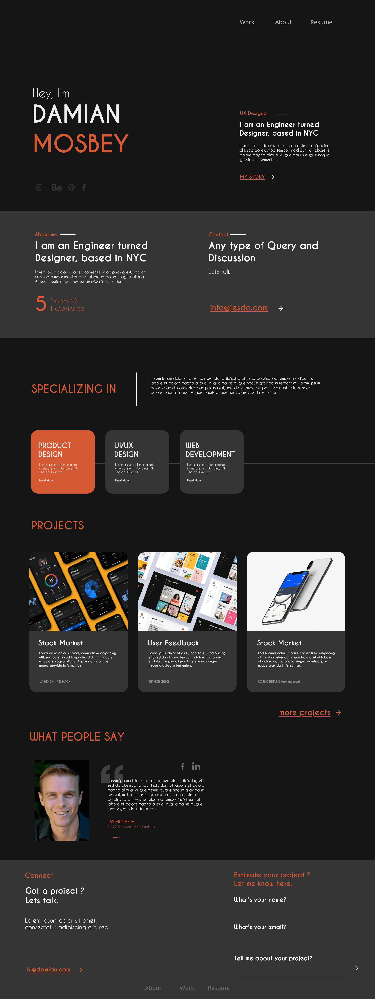

THE PROBLEM
The main goal was to create a website that showcases the work of the designer
INITIAL SKETCHES
Once we organized all our research and defined our solution, we began to explore potential designs for the website.
DESIGN
I designed the current website to provide individuals with information about the designer, and design projects.
Landing Page
Branding and Identity
As this was a personal project, I had the liberty to choose type face and the colors.

What I Learned
I learned to create lo-fi prototyopes and hi-fi prototyopes with Adobe XD
I learned to create wireframes in Invision whiteboard.